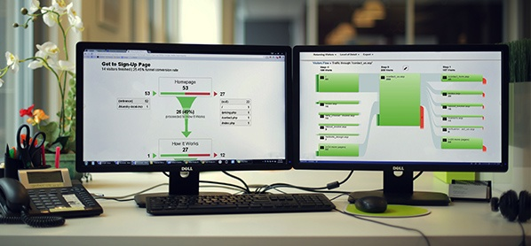

In the previous article, we talked about how to use Google Analytics metrics and basic reports and some tips for measuring website traffic acquisition and user behavior. This article focuses on setting up and tracking conversions or, in other words, the completion of an activity on your website that translates into business success. If we were to single out some of the most important metrics for measuring website’s success, this would be at the top of the list. In many cases, there is no better way to gauge your website’s effectiveness than measuring its conversions.

The Importance of Measuring Goals
Conversion goals measure business outcomes. Goals in Google Analytics track the true effectiveness of your website’s performance. It shows whether or not the users of your website are doing what you want them to be doing and confirms that you are on track to reach your website's business objectives.  Without Goals in place, not only will you be unable to take full advantage of Google Analytics, you will not be able to measure your website’s level of performance. So let’s set them up!
Without Goals in place, not only will you be unable to take full advantage of Google Analytics, you will not be able to measure your website’s level of performance. So let’s set them up!
Know What You Are Measuring and Why
Before you can measure goals, you first need to set them. I recommend using the SMART model for setting website goals. The "M" in SMART stands for "Measurable". This discipline ensures that you are on track toward achieving business objectives with your website. I also prepared 15 website goal examples that will help you get started.
Setting Up Goal Tracking with Google Analytics
The first step in goal tracking is to determine the action that defines a "conversion" on your website. Google Analytics uses Goals to track those conversions. When a Goal is complete (the action), a conversion is logged. The conversion must align with the action you want website visitors to take to bring them closer to achieving your website’s SMART goal. A conversion may be a purchase, an information request, subscription, an online registration or any other desired action taken by a user.
Common Goal Examples to Track
|
User Acquisition Goal |
Revenue Goal |
|
|
|
Inquiry Goal |
Engagement (desired action) |
|
|
Determine Your Destination Page
The method Google Analytics employs to measure goals is primarily through destination pages. A destination page is where a user lands upon completing a certain task. For example, if a user ends up on a “Thank you for Contacting Us or Requesting Information” page, Google Analytics knows that the user submitted a Contact Us form or a Request Information form. Similarly, if a user ends up on the "Thank you for your order!" page, this tells Google Analytics that the user ordered a product or service; as this is the only way the user would arrive on that page. To determine if your website has a destination page, check if your page URL changes after an action is completed.  You can then set up Goal Tracking in Google Analytics by following these steps:
You can then set up Goal Tracking in Google Analytics by following these steps:
Create a New Goal
1. Sign in to Google Analytics. 2. Go to the Admin tab and switch to the desired Account, Property and View.

3. In the View column, click Goals.

4. Click +New Goal.

5. Select a template that meets your business objectives.
 Note that Goal templates are tailored to meet common needs of businesses within specific industries so if you haven't selected an industry, you may not see all templates.
Note that Goal templates are tailored to meet common needs of businesses within specific industries so if you haven't selected an industry, you may not see all templates.
6. Click on Continue, and Name your Goal.
7. Specify how you want to track your goals. In most cases this will be the destination page we discussed above.

Click on Continue, and specify the URL of your destination page.

Tracking Goals with Events
If your website does not have destination pages for the actions you wish to track (for example, “Thank you” messages appear on the same page or in overlay windows) and you remain on the same URL after completing the action, then you will need to track using Events. This is a little more advanced so you may want to request that your web developer assists in setting up Event tracking that can be used to track goals.
Measuring Website Conversions with Google Analytics
Once your Goals are set, Google Analytics will start recording data each time a Goal conversion happens. Note that Analytics will show conversions only from the moment you set up Goals tracking, not before. Once data is received, you will see a number of Goals reports. Let's look at some basic conversion KPIs you will see across Google Analytics reports. For more detailed information, please download my free eGuide on Conversions Tracking with Google Analytics. 
Goal Conversion Rate
Goal Conversion Rate shows the percentage of visits that resulted in a conversion as defined by the Goal. If we were to single out one KPI (Key Performance Indicator) for measuring the effectiveness of your website, this would be it. In many cases, there is no better indicator to gauge your website’s effectiveness than its conversion rate. All steps taken from this point on should be focused on maximizing this conversion rate.  Simply put, if the conversion rate is high, and you're bringing in more quality traffic, you will reach your business objectives faster. On the other hand, if the conversion rate is low, it doesn't matter how much traffic you’re bringing in – your website is ineffectively engaging visitors which means you are wasting time and money. You want this number to be high and increase over time, as a result of ongoing website improvements and marketing efforts.
Simply put, if the conversion rate is high, and you're bringing in more quality traffic, you will reach your business objectives faster. On the other hand, if the conversion rate is low, it doesn't matter how much traffic you’re bringing in – your website is ineffectively engaging visitors which means you are wasting time and money. You want this number to be high and increase over time, as a result of ongoing website improvements and marketing efforts. 
Goal Completions
Goal Completions shows the total number of conversions. Where the conversion rate measures effectiveness, the number of conversions measures the impact on your business. As quality traffic to the website grows, a healthy conversion rate should translate to results in sales, leads, subscriptions, registrations or any other action you consider to be a conversion.  Other examples of conversion indicators for your website could be liking or sharing a post on social media or viewing an embedded video. This measures the action and not the loading of a specific page. Goals in Google Analytics can also be used to track: visit duration (i.e., at least 10 minutes of interaction), number of pages per visit (reading at least five articles) or events (videos, plays or social recommendations). Google Analytics allows the setup of up to 20 goals, so you can assign goals to anything on your website with a measurable impact.
Other examples of conversion indicators for your website could be liking or sharing a post on social media or viewing an embedded video. This measures the action and not the loading of a specific page. Goals in Google Analytics can also be used to track: visit duration (i.e., at least 10 minutes of interaction), number of pages per visit (reading at least five articles) or events (videos, plays or social recommendations). Google Analytics allows the setup of up to 20 goals, so you can assign goals to anything on your website with a measurable impact.
Goal Value
Goal Value shows the monetary value of conversions. If Goal Completion measures the quantity, Goal Value measures the quality. You can assign Goals a monetary value, so you can actually see the worth of each conversion to your business (i.e., you can see your total sales numbers). Because this setup includes additional programming, you may want to ask your website developer to pass order information to Google Analytics so it can capture the exact value of each order. You can also track actions like average order values, total amounts sold, purchasing trends, most popular categories or top selling items.  You can also assign arbitrary numbers to goals ($1 for subscribing to a mailing list and $5 for completing a Contact Us form). By giving each goal a dollar value, you can prioritize. For example, if you believe that leads that originate from LinkedIn are twice as valuable as those from Facebook, set the dollar amounts accordingly.
You can also assign arbitrary numbers to goals ($1 for subscribing to a mailing list and $5 for completing a Contact Us form). By giving each goal a dollar value, you can prioritize. For example, if you believe that leads that originate from LinkedIn are twice as valuable as those from Facebook, set the dollar amounts accordingly. 
E-Commerce Goals Tracking
If you sell products or services directly on your website, it is imperative that you set up e-commerce tracking. It is a more advanced setup so you might need to request help from your web developer or IT department to set it up: setting up e-commerce tracking with Google Analytics. E-commerce tracking will let Analytics collect and measure transactional data like product performance, purchase amounts, billing locations and more. These reports will give you an understanding of how your business is doing as well as give you a measure on the return of your marketing dollars. 
Other Goals Reports
Google Analytics comes with a number of other Goals-related reports: Goal URLs, Reverse Goal Path, Funnel Visualization, Goal Flow and more. For more information on these reports, please download my free eGuide on Conversions Tracking with Google Analytics.